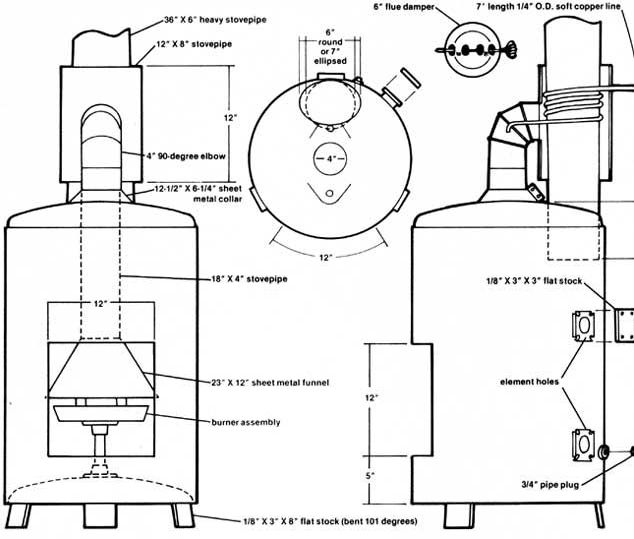

[1] The completed furnace's burner assembly is filled with crushed asbestos or an asbestos brick. As an added fire precaution, the bottom of the stove is then filled with sand. [2] A short angle iron ""handle"", a peephole covered by a movable metal flap, and a window latch fastener complete the furnace's door. [3] MOTHER's waste oil burner gets a light from Richard Freudenberger [4] The blaze is just getting started ... and already Richard can feel the heat